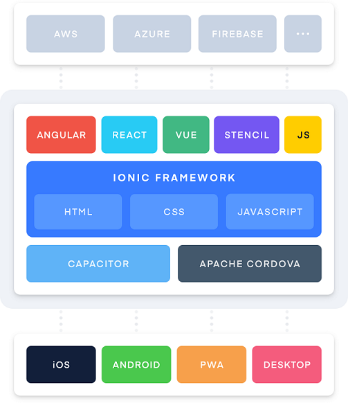

Tuntas Belajar Ionic
Oleh: Julian Alimin
Cari saya di link-link berikut
Daftar Isi
Mengenal Ionic
Pengantar
Atau navigasi kebawah untuk lihat versi Text
Selamat Datang
Tujuan Belajar Tuntas Ionic adalah sebagai salah satu pilihan untuk belajar Ionic berbahasa Indonesia.
Isi Pembelajaran
- Penjelasan Ionic
- Automatisasi Testing dan Code Coverage
- Automatisasi Deployment
Target Audience
- Developer/Engineer
- Quality Assurance
- Devops
Isi pembelajaran ini akan terus diupdate dengan harapan suatu saat benar-benar tuntas
Jika ingin memberikan masukkan Materi atau bahkan ingin menyumbangkan isian maka bisa lgs saja membuka Issue atau submit Pull Request ke.
Tentang Penulis
Hi, nama Saya Julian Alimin

Saat ini saya menjabat sebagai VP of Engineering di GreatDay HR dimana kami membuat aplikasi HRIS Mobile First berbasis Ionic dengan jumlah pengguna harian lebih dari 200 ribu
Saya memiliki 15 Tahun pengalaman kerja di Dunia IT mencakup Development, Implementasi & Maintenance Product ( dan kadang juga bantu Sales Support )
Hobby saya diantaranya adalah bermain Bola serta ngoprek-ngoprek technology terbaru ( jika ada budgetnya )
Dan di waktu senggang saya senang menghabiskan waktu dengan Keluarga
Cukup tentang saya, mari lanjut ke Materi
Belajar Tuntas Ionic
Apa itu Ionic ?
Atau navigasi kebawah untuk lihat versi Text
Menurut website resminya:
Ionic’s open source Framework and developer-friendly tools and services power apps for some of the world’s best-known brands
Kita ambil 3 Kata Benda yang digunakan oleh Ionic:
- Framework
- Tools
- Services

- Framework: Library dan UI Komponen untuk membuat Aplikasi
- Tools: Penunjang penggunaan seperti Ionic CLI, Stencil, Capacitor, Ionic Native
- Services: Online Service (Ionic Appflow/Cloud)
Framework Ionic
Bersifat Framework Agnostic sehingga bisa digunakan dengan Framework apa saja (Angular, React Vue) atau dengan Vanilla Javascript.
Konsep Framework
- @ionic/core –> UI Components
- @ionic/angular
- @ionic/react
- @ionic/vue
Tools
- Ionic CLI: Untuk installasi dan jalankan Toolchain
- Stencil: Untuk membuat web component native
- Capacitor: Evolusi dari Cordova
- Ionic Native: Plugin-plugin Cordova/Capacitor untuk akses Fitur Native
Services
Ionic Appflow (dulunya Ionic Cloud) merupakan kumpulan Tools berbayar untuk membantu development Ionic. Beberapa Fiturnya:
- Authentikasi
- Automated Build
- Hot Push
Project Ionic Pertamaku
Persiapan
Hal minimal yang dibutuhkan adalah Node JS dan sebuah IDE (Saya merekomendasikan VS Code)
Pro Trip: Gunakan NVM
Memulai Project
## Cara yang direkommendasikan Ionic
npm install -g @ionic/cli
ionic start myApp tabs
## Cara yang saya rekomendasikan
npx --package @ionic/cli ionic start myApp tabs
atau
npx -p @ionic/cli ionic start myApp tabsRun Project di Lokal
npx -p @ionic/cli ionic serve